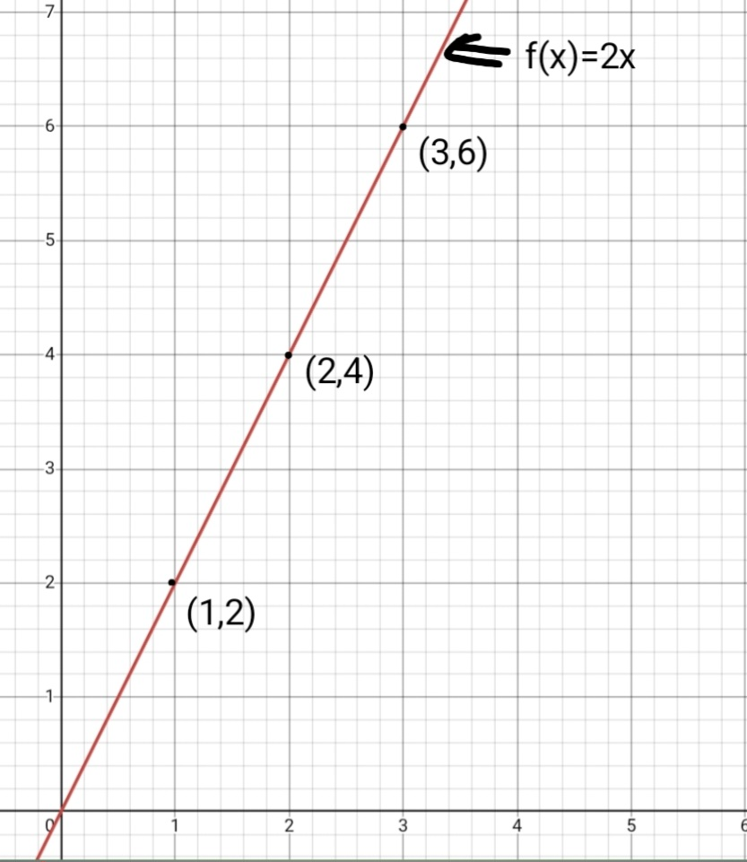

Functions are rules which assign exactly one output for one input. It is connecting independent variables to dependent variables.
A function is a specific type of relationship or rule that assigns each input value to exactly one output value.
Function is denoted as f(x) and read as f of x, where f is the name of the function,f(x) gives value on y axis or y in genral. In the function f(x)= 2x, 2x is the rule to calculate f(x).
Domain is set of possible values of input i.e. x and x axis. Range is set of possible values of output i.e. f(x),y and y axis.

graph of f(x)=2x for 3 values of 1,2,3
To test whether a relation is a function or not we use vertical line test in which we take a vertical line and trace along the graph if we have the line cutting the graph at two points at any point it is not a function.
Any function which has no negative inteager power of x,There is no non-real cofficient of x and the cofficient of highest degree of x is not zero is called Polynomial Function.
Defination-f(x)=a0+a1x+a2x²...anxn,here n can't be negative and only inteager is allowed.
Domain:the domain is (-infinity,infinity).
Graph: smooth and the term with highest degree of x decides the graph.
Any function which can be written as p(x)/q(x) and q(x)≠0 just like rational number which are written in form of p/q.
Defination:A rational function is a fraction of two polynomial function,wherre denominator is not zero.
Domain:All real numbers except where q(x)=0.
Holes:occurs if there is a factor z is present in both p(x) and q(x).
Any function which has power as x and base is not less than 0,not equal to 1 and not multiplied by 0.
Defination-An exponential function is a mathematical formula of the formf(x)=a.bx,where variable x is a exponent,b is base(b>0,≠1) and a is the iniitial value(a≠0).
Domain and Range:Domain is (-infinity,infinity) for all real numbers.Range is (0,infinity) for all positive real numbers
Any function which has more than one rule.
Example-f(x)=x2 if x>=0
f(x)=-x if x<0
Composite Function is applying function over function,si it takes output of one function as input of other function.
f(g(x)) or f○g in this case g will be evaluted first and output will become input for f.
The concept of function was not discovered but rather it evolved.Although the term was introduced by Gottfried Leibniz in 1673.